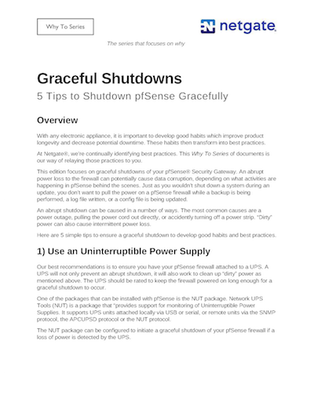

Technical Papers I have written
While I was writing the monthly Netgate Newsletters, I started including a technical paper each month that I called the "Why To Series". There was a lot of how-to documentation online for pfSense software, as well as how-to videos, but there was nothing readily available on why you should implement this feature or that. The "Why To Series" was designed to highlight the benefits of various features, with links to satisfy the "how-to" aspect of implementing the features.
January 2024
Why To Visit Cedar Park Microbreweries
Applying for the Tourism Marketing Manager role for the city of Cedar Park, I wrote a sample paper on Microbreweries in and around Cedar Park. The idea would be to convert this paper into a blog or to make it available to newsletter subscribers who have shown interest in the brewery articles.
5 Things to Remember for pfSense Software
5 Robust Add-on Free Features for pfSense
7 Tricks You May Not Know About
5 Tips to Shutdown pfSense Gracefully

6 Tips to Make Your pfSense Update Smooth
5 Tips for Using pfSense Software
3 Reasons to Upgrade Your Firewall